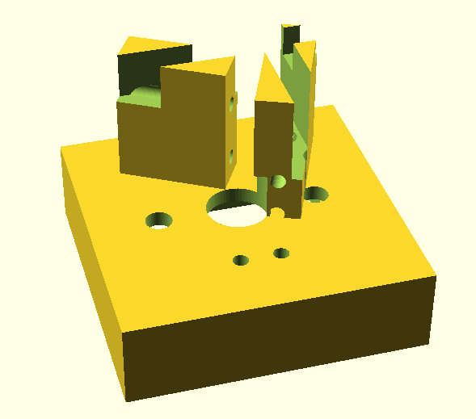
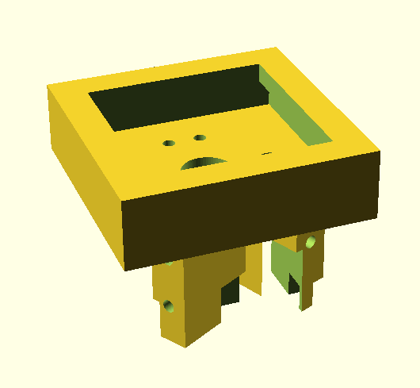

Way back when I joined one of the early ergodox drops. The cable connections between the ergodox halves have always been finicky and resoldered on so many times that it is now close to unrepairable.
So I have been working on building a new keyboard. For my new keyboard I want:
- hot-swappable switch sockets: who knows, one day I may explore beyond cherry mx browns
- compact: After the broad and large ergodox I would like something small and portable
- split keyboard: I loved my ergodox for the thumb clusters and relaxed posture
- completely wireless: I am not sure if I can trust Bluetooth, never having worked with it before, but this would be the coolest
- oled screens: I want some sort of feedback to help troubleshoot Bluetooth connections, and I would also like help avoiding layer confusion
The Sockets
 Bottom view of a single switch socket. The design for the diodes and connector wires is very similar to Jan Lunge’s sockets.  Top view of a single switch socket. My brother and I bought a little resin printer so I have been experimenting with creating a 3d printable hot-swappable switch socket.
I started off with Jan Lunge’s Cherry MX Hot-Swappable Sockets for my first few prototypes. However, eventually, I modelled my sockets using openscad to make it easier to experiment with different hole clearances to finetune for a snug fit using my printer. I am fairly happy with these sockets. I have adjusted them so that they snuggly hold on to the switches, which click in with a satisfying snap. The supports for the diodes and connector wires on the bottom of the socket are put on an angle so that the sockets can be rotated at different points in the case to avoid tight fits. The only thing I plan on changing if it becomes an issue is the height taken by the cable supports and organizers under the key.
The Case Design
My case design attempt looks like this.
I struggled in openscad to check that the case thickness was consistent, and so I ended up with the case thickness pinching out to almost nothing in a couple of places. Overall though, I am really happy with the look of the keyboard.

The Printer
As for the printer, it does a really good job on small objects when printing them one at a time, like the two switches below.

 However, I had trouble with warping on larger prints.
For example, there was a strange warping in the corner of the case in the sample case below.
I caught the printer running low on resin which I hope was the only reason the print went sour.
However, I had trouble with warping on larger prints.
For example, there was a strange warping in the corner of the case in the sample case below.
I caught the printer running low on resin which I hope was the only reason the print went sour.

The Components
For the micro-controller, I got two Adafruit Feather because all of the cheaper alternatives were out of stock at the time. For the displays, I got Oled Adafruit Wings, and I got two 1500mAh Li-Po batteries.
I will update this post with my progress once I have time to work on this project again.